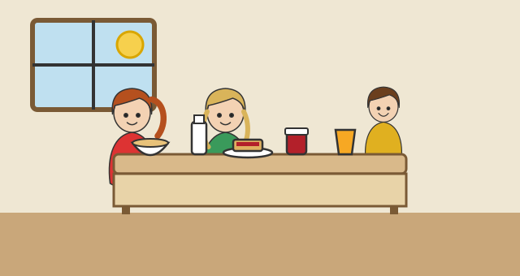

Essen und Trinken: Mahlzeiten und was ich mag
Mit einem KI-Tutor lernen
Ein KI-Tutor erklärt dir diese Seite und hilft dir bei den Aufgaben. Wähl deinen Assistenten:
Mit Claude öffnen Mit ChatGPT öffnen Mit Mistral Vibe öffnen
Du nutzt dein eigenes Konto beim Anbieter. Der Assistent ist kein Angebot von lernapps.net: lernapps liefert nur Inhalte und Aufgaben. Die Wahl gilt für alle Seiten, nur auf diesem Gerät.
Was steht auf dem Tisch?

Von links: Ellie (Pferdeschwanz), Sophie (Zöpfe) und Peter (gelbe Jacke) am Tisch der Parkers.
Quelle: eigene Zeichnung. Lizenz: CC-BY-4.0.Sophie schickt ihrer Familie ein Foto vom Tisch bei den Parkers. Dazu schreibt sie: „Hier gibt es viel zu probieren!“ Die Mahlzeiten (meals) heißen auf Englisch etwas anders als bei dir. Heute lernst du, wie sie heißen und wie du sagst, was du isst und was du magst.
Aufgabe
Lösung
breakfast richtige Antwort
Müsli, Toast mit Marmelade und Saft gehören zum Frühstück, auf Englisch breakfast.
lunch
lunch ist das Mittagessen. Auf dem Foto sind Müsli, Toast und Saft, das ist ein Frühstück.
dinner
dinner ist eine Hauptmahlzeit, oft am Abend. Müsli und Toast gehören nicht dazu.
Müsli, Toast mit Marmelade und Saft sind ein Frühstück, also breakfast.
Das kannst du danach: Du nennst Mahlzeiten, Lebensmittel und Getränke und sagst, was du gern isst und was nicht.
Mahlzeiten, Essen und Gewohnheiten
Die Mahlzeiten heißen breakfast (Frühstück), lunch (Mittagessen), dinner (die Hauptmahlzeit, oft am Abend) und snack (Zwischenmahlzeit). Dazu kommt tea: Das Wort heißt Tee, kann aber auch eine frühe Abendmahlzeit sein. Bei den Parkers ist tea um sechs Uhr abends. Ob tea ein Getränk oder eine Mahlzeit ist, erkennst du am Satz.
| Ausdruck | Bedeutung |
|---|---|
| cereal | Müsli |
| jam | Marmelade |
| yoghurt | Joghurt |
| vegetables | Gemüse |
| packed lunch | Mittagessen von zu Hause zum Mitnehmen |
Ein packed lunch bereitet man zu Hause vor und nimmt es mit, zum Beispiel in die Schule. Auch Ellie hat in der Schule ein packed lunch. Mit have sagst du, was du isst oder trinkst: I usually have juice and an egg for breakfast. Vor breakfast, lunch, dinner und tea steht kein the. Was du magst, sagst du mit like: I like bananas. Bei he, she, it bekommt das Verb ein -s: Peter likes bananas. Die Verneinung heißt don't (bei I, you, we, they) und doesn't (bei he, she, it), danach steht das Verb ohne -s: He doesn't like soup. Die Frage mit he, she, it beginnt mit Does: Does she like cheese? Yes, she does.
Merke
I have breakfast, nicht „I have the breakfast“. usually (normalerweise) steht vor have. Bei he, she, it hat das Verb ein -s: he likes, she drinks. Aber nach doesn't und Does steht das Verb ohne -s. tea kann Getränk oder Abendmahlzeit sein. Ein packed lunch ist ein Mittagessen von zu Hause.
Übung
Aufgabe
Lösung
Richtige Antwort: packed lunch – a cheese sandwich and an apple; tea – pasta with chicken and vegetables; snack – a banana
Cereal with milk bleibt übrig, denn es ist ein Frühstück und keine der drei Mahlzeiten hier.
Aufgabe
Lösung
Richtige Antwort: Die Aussage stimmt nicht.
Bei den Parkers heißt tea auch die Abendmahlzeit um sechs Uhr. Ob es ein Getränk oder eine Mahlzeit ist, erkennst du am Satz.
Aufgabe
Schreibe den ganzen Satz. not like steht für die Verneinung.
Tipp
Bei he, she, it wird aus like likes.
- Peter · like · pasta
- Mrs Parker · drink · tea
- Sophie · not like · cheese
Lösung
- Peter likes pasta.
- Mrs Parker drinks tea.
- Sophie doesn't like cheese. (auch richtig: Sophie does not like cheese.)
Aufgabe
Schreibe den Satz auf Englisch.
Tipp
Mit have oder eat sagst du, was du isst.
- Ich habe normalerweise Brot und Käse zum Mittagessen.
- Mrs Parker trinkt zum Frühstück Tee.
- Ich esse normalerweise Reis mit Gemüse.
Lösung
- I usually have bread and cheese for lunch. (auch richtig: I usually eat bread and cheese for lunch.; I normally have bread and cheese for lunch.; I normally eat bread and cheese for lunch.)
- Mrs Parker drinks tea for breakfast. (auch richtig: Mrs Parker drinks tea at breakfast.; Mrs Parker drinks tea with breakfast.)
- I usually have rice with vegetables. (auch richtig: I usually eat rice with vegetables.; I normally have rice with vegetables.; I normally eat rice with vegetables.)
Aufgabe
In jedem Satz steckt ein Fehler. Schreibe den Satz richtig.
Tipp
Prüfe the, das -s und die Mahlzeit.
- I eat the breakfast at seven.
- He like pasta.
- Ellie takes a packed dinner to school.
Lösung
- I eat breakfast at seven. (auch richtig: I have breakfast at seven.)
- He likes pasta.
- Ellie takes a packed lunch to school.
Aufgabe
Hör zu und schreibe, was du hörst.
- KI
- KI
- KI
Lösung
- Sophie usually has toast for breakfast.
- Does Amir like chicken?
- Peter drinks water with his sandwich.
Selbst sagen und schreiben
Aufgabe
Hör zu, sprich nach und nimm dich auf. Vergleiche dann mit dem Original.
Tipp
Hör den Satz zuerst. Sprich dann langsam nach.
- My sister likes cereal with yoghurt.KI
- After school I usually have a sandwich.KI
- My dad drinks juice, but I drink water.KI
Zum Aufnehmen braucht diese Aufgabe JavaScript. Die Beispiele kannst du auch ohne anhören.
Lösung
- My sister likes cereal with yoghurt.
- After school I usually have a sandwich.
- My dad drinks juice, but I drink water.
Dein Profil „All about me“ (Alles über mich) wächst weiter. Ellie hat ihre Zeile über das Essen geschrieben. Schau, wie sie es macht.
| Was | Englisch |
|---|---|
| Mein Frühstück | I usually have cereal with milk and orange juice. |
| Mein Mittagessen | I have a packed lunch at school. |
| Was ich gern esse | I like pasta with chicken and vegetables. |
| Was ich nicht mag | I don't like soup. |
Offene Aufgabe
Schreibe die nächste Zeile deines Profils „All about me“ in dein Heft, drei bis fünf Sätze: Was isst und trinkst du normalerweise? Was magst du, was nicht? Du schreibst, was bei dir stimmt, auch wenn du zum Beispiel kein Fleisch isst. Die App bewertet deinen Text nicht: Vergleiche ihn danach selbst mit den Punkten.
Eine gute Antwort enthält:
- Ein Satz sagt mit I usually have, was du zu einer Mahlzeit isst oder trinkst. Nachlesen
- Ein Satz sagt mit I like, was du gern isst. Nachlesen
- Ein Satz sagt mit I don't like, was du nicht magst, oder mit einem anderen Satz, was du nicht isst. Nachlesen
- Vor breakfast, lunch, dinner und tea steht kein the, und es sind ganze Sätze mit einem Punkt am Ende. (Form)
Lösung
I usually have toast with jam for breakfast. I have lunch at home. I like rice and vegetables. I don't like fish.
Oder: I don't eat meat. I usually have bread and cheese for breakfast and I drink milk. I like pizza.
Wie es weitergeht
Sophie schreibt nach Hause: „Das Essen bei den Parkers schmeckt mir. Jetzt vergleiche ich Ellies Alltag mit unserem!“ Auf der nächsten Seite siehst du zwei Spalten und sagst, was gleich und was anders ist.